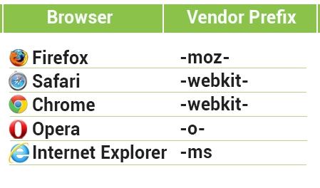

Conceptos básicos
Prefijos de navegación
Son una forma en la que los fabricantes de navegadores añaden soporte a las nuevas características de css en periodos de prueba o experimentación.
Por ejemplo, el prefijo de Safari y Chrome es -webkit-.
.cuadrado {
-webkit-border-radius: 10px;
}
La mayoría de navegadores de hoy en día funcionan sin prefijos, pero es esencial conocerlos para la compatibilidad y entendimiento de códigos antiguos.
Escribir varias veces las propiedades para que funcionen en diferentes navegadores puede ser molesto pero es temporal. Mientras los navegadores mejoran, añadirán soporte a las propiedades y eliminaran los prefijos.

border-radius
Podemos darle esquinas redondeadas a cualquier elemento.
.cuadrado{
width: 200px;
height: 200px;
background-color: orangered;
border-radius: 50px;
}
Podemos especificar el radio de cada esquina en orden: superior-izquierdo, superior-derecho, inferior-derecho, inferior-izquierdo.
.cuadrado{
width: 200px;
height: 200px;
background-color: orangered;
border-radius: 0 0 0 50px;
}
Una caja puede ser convertida en un círculo solo usando CSS. El radio debe ser la mitad del ancho y alto de la caja.
.circulo {
width: 200px;
height: 200px;
border-radius: 100px;
}